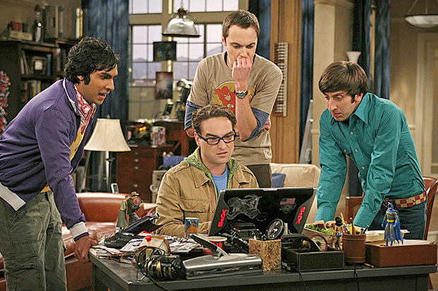
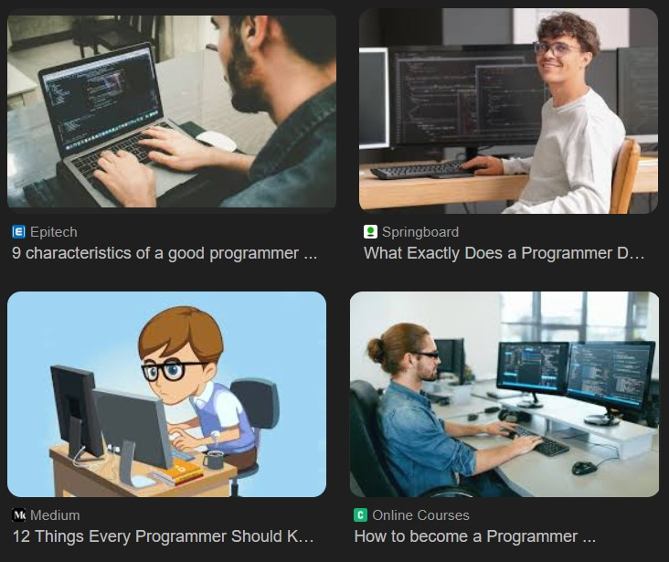
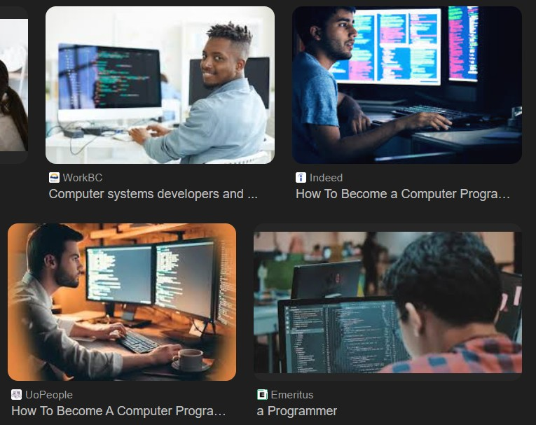
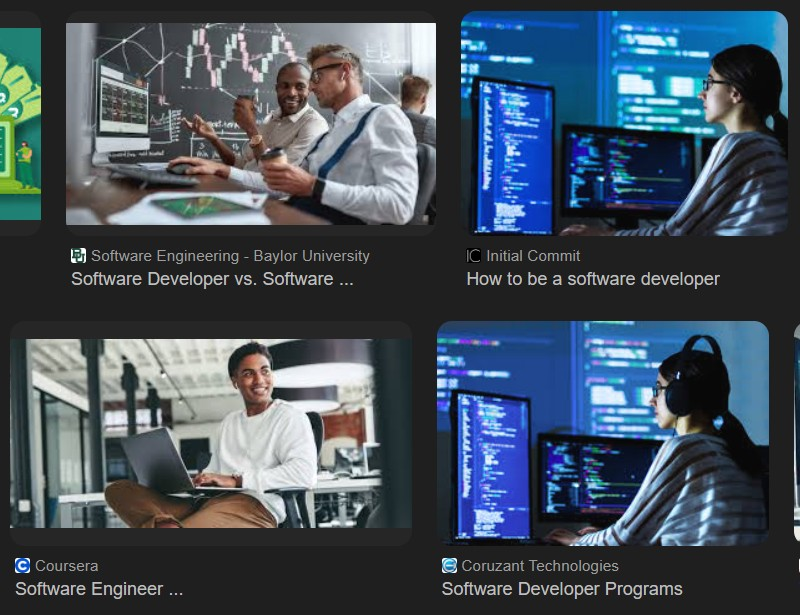
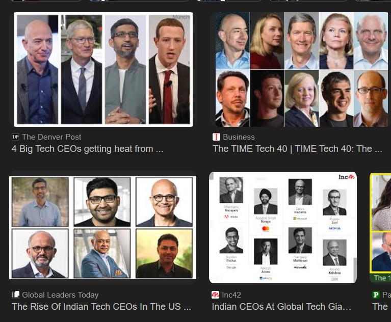
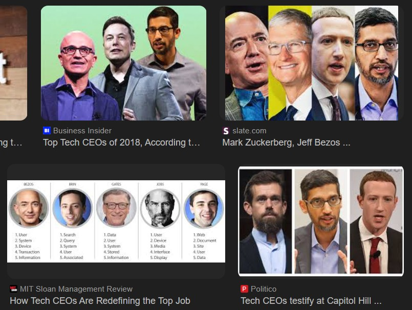

By Nina Sproule
When picturing a computer scientist, many imagine a stereotypical "geek" or "nerd" often portrayed in media. These stereotypes often depict computer scientists as socially awkward individuals, typically male, who are deeply engrossed in technology and lack social skills. Such portrayals can influence public perception and deter diverse individuals from pursuing careers in computer science.

Characters from The Big Bang Theory presenting stereotypical computer geeks.
Mia from The Princess Diaries as an example of a shy, geeky girl. She later gets a makeover and removes her glasses to become "beautiful".
Similar stereotypes are often applied to women in computer science, portraying them as shy or socially awkward, sometimes emphasizing a deviation from traditional femininity and beauty standards. More often than not, media representations of women in tech highlight their appearance or fashion choices, rather than their skills or accomplishments. These stereotypes can create barriers for women entering the field, as they may feel pressured to conform to certain images or face discrimination based on these preconceived notions.
When immersed in a male dominated environment, attention is inevitable. Whether or not a woman fits in with the stereotype, she will stick out due to the gender minority. Attention given may be positive or negative, but both are unwelcome and unfair. There is no way to be a simple equal coworker. Any accomplishments or mistakes will be attributed to being a woman, rather than just a computer scientist.
From the movie Malena. An attractive woman surrounded by overwhelming male attention.
Women in Tech
Women make up around 27% of the global tech workforce.
CS Graduates
Roughly 21–22% of computer science graduates are women.
Higher Attrition
Women leave tech at a significantly higher rate than men.
Pay Gap
The average wage gap in tech is about 19% in some regions.





A brief timeline highlighting some key contributions women have made to the foundations of computing.
Often considered the first computer programmer for her notes and algorithm for Charles Babbage’s Analytical Engine.
Co-invented frequency-hopping spread spectrum, a foundation of modern secure wireless communications (Wi‑Fi, Bluetooth).
Developed early compilers and played a major role in designing COBOL, opening programming to higher-level languages.
Johnson calculated orbital trajectories for NASA missions; Hamilton led the development of Apollo flight software and advocated for rigorous engineering of software systems.
Invented the Spanning Tree Protocol (STP), enabling resilient network topologies and making modern LANs practical.
Contributed to programming language design (CLU) and formalized programming principles such as the Liskov Substitution Principle.
Recognized for pioneering work on program optimization and compilation techniques; awarded the Turing Award (2006).
Major contributions to cryptography and zero-knowledge proofs; foundational work that shaped modern secure protocols.
Research shows that diverse teams produce better code and more innovative solutions than homogeneous teams.
Companies with diverse leadership teams are 33% more likely to outperform their peers in profitability.
Girls show equal interest in STEM subjects as boys in elementary school, but lose interest by middle school due to social pressures.
Having female role models in CS significantly increases girls' interest in pursuing computer science careers.